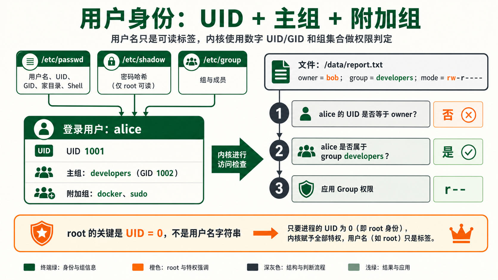
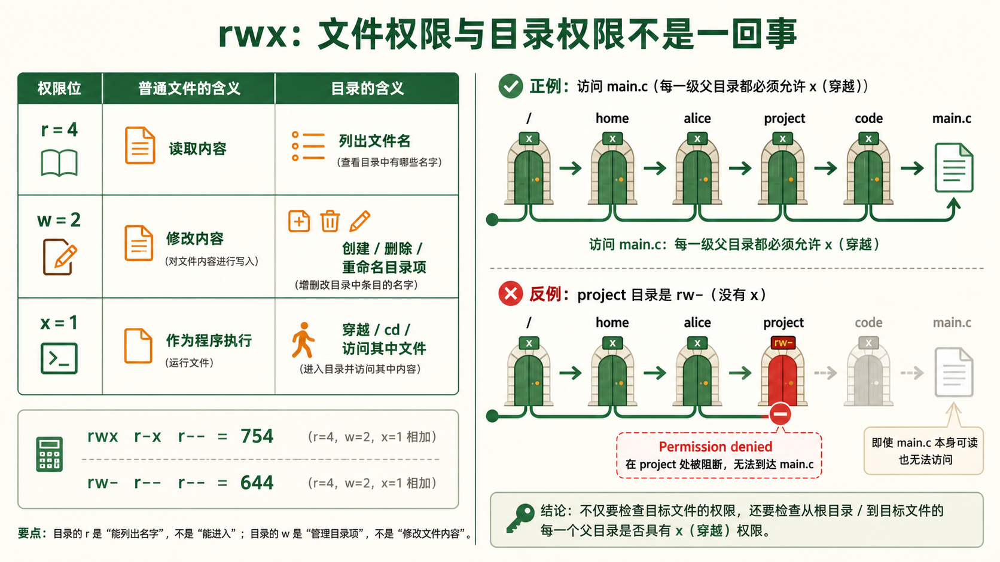
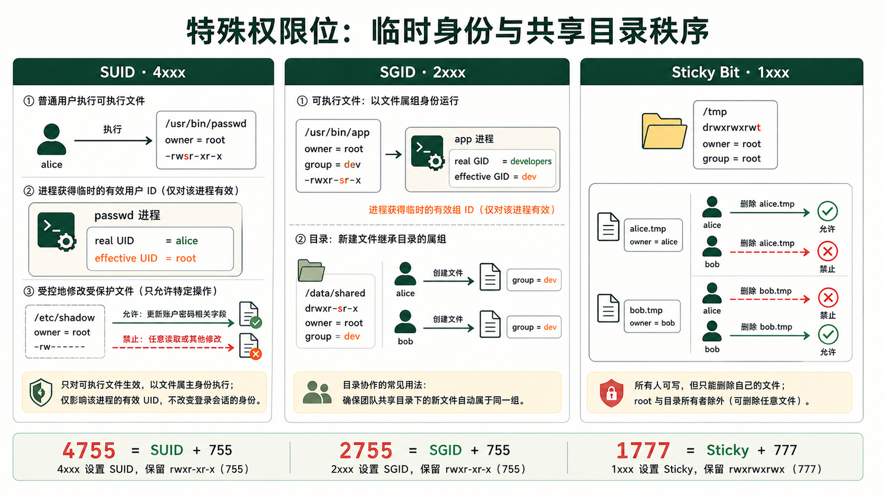
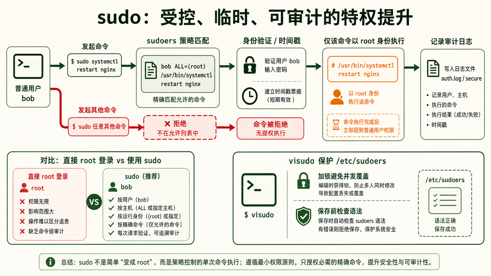
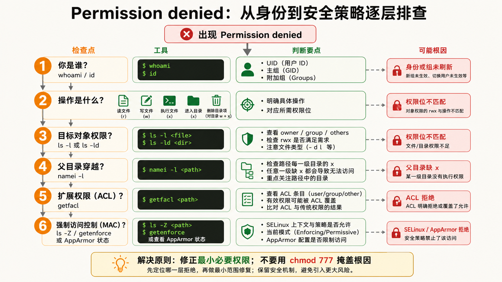

1用户与组概念
为什么 Linux 是天生多用户系统？
核心问题：为什么要有"用户"这个概念？
Linux 从 UNIX 继承了多用户基因。最初一台 PDP-11 小型机要同时服务几十个终端，每个人登录后看到的是"自己的"环境，不能动别人的文件。这套机制的三个支柱是：隔离（每个人看到自己的文件）、权限分配（谁能读谁不能读）、分权制衡（root管系统，普通人用应用）。
每个用户有一个唯一的整数 UID（User ID）。UID=0 是 root——不是名字叫 root 所以是管理员，而是 UID 为 0 的那个实体拥有最高特权。你可以把 root 改名叫 superman，但只要 UID 还是 0，它就是管理员。
核心文件速查
| 文件 | 存储内容 | 典型行示例 |
|---|---|---|
/etc/passwd | 用户清单（7个字段，冒号分隔） | alice:x:1001:1001:Alice:/home/alice:/bin/bash |
/etc/shadow | 密码哈希（仅 root 可读） | alice:$6$salt$hashedpw:19000:0:99999:7::: |
/etc/group | 组清单 | dev:x:1002:alice,bob,carol |
/etc/gshadow | 组密码哈希 | dev:!::alice,bob |
/etc/passwd 每行格式：用户名:密码占位符x:UID:GID:GECOS描述:家目录:登录Shell。注意密码字段现在固定为 x，实际密码哈希存在 /etc/shadow 中——这是安全性进化，因为 /etc/passwd 必须世界可读（所有程序都要查询用户信息），但密码哈希不能给所有人看。
主组与附加组
每个用户属于一个主组（primary group，写在 /etc/passwd 的 GID 字段）和多个附加组（supplementary groups，写在 /etc/group 里把用户名加进去）。

# 创建用户时指定主组和附加组
useradd -m -g developers -G docker,sudo alice
# -g developers → 主组是 developers
# -G docker,sudo → 附加组是 docker 和 sudo（用户同时属于这三个组）2权限三要素 rwx
Owner + Group + Others 三围权限模型
核心问题：ls -l 输出的那串神秘字符到底是什么？
$ ls -l script.sh
-rwxr-xr-- 1 alice dev 2048 Jul 31 10:00 script.sh第一个字符是文件类型（- 普通文件、d 目录、l 符号链接）。后面 9 个字符分为三组，每组 3 位：
| 组位 | 字符 | 对象 | 含义 |
|---|---|---|---|
| 1-3 | rwx | Owner (alice) | 属主可读、可写、可执行 |
| 4-6 | r-x | Group (dev) | 组成员可读、可执行，不可写 |
| 7-9 | r-- | Others (其他所有人) | 其他人只能读 |
rwx 在文件和目录上的含义完全不同
| 权限 | 数字 | 对文件的意义 | 对目录的意义 |
|---|---|---|---|
| r (read) | 4 | 可以读取文件内容 (cat/more) | 可以列出目录下的文件名 (ls) |
| w (write) | 2 | 可以修改文件内容 (但删除文件要看目录的w) | 可以在目录中创建/删除/重命名文件 |
| x (execute) | 1 | 可以作为程序/脚本运行 | 可以 cd 进入该目录（成为当前工作目录） |

权限的数字表示法——八进制加法
r=4, w=2, x=1。每一组权限值就是这三个数字的和。例如 rwx = 4+2+1 = 7，r-x = 4+0+1 = 5，r-- = 4+0+0 = 4。所以 rwxr-xr-- = 754。
rwx r-x r-- → 7 5 4 → 权限值 754
rw- r-- r-- → 6 4 4 → 权限值 644
rwx rwx --- → 7 7 0 → 权限值 770/home/alice/project/code/main.c，从根开始，/、/home、/home/alice、/home/alice/project、/home/alice/project/code 这五个目录 全部要有 x 权限。3chmod / chown / chgrp
权限变更三大命令的完整语法与实战
实操chmod —— 改权限（change mode）
两种语法：数字法（直接设置）和符号法（增量修改）。
# === 数字法：精确设置（最常用） ===
chmod 755 script.sh # rwxr-xr-x → 属主全权，其他人读+执行
chmod 644 config.txt # rw-r--r-- → 属主可读写，其他人只读
chmod 600 id_rsa # rw------- → 只有属主可读写（SSH私钥标准权限）
chmod 777 shared/ # ⚠️ 危险！所有人都能读、写、进入
# === 符号法：增量修改 ===
chmod u+x script.sh # 给属主(user)添加执行权限
chmod g-w shared.txt # 移除组(group)的写权限
chmod o=r report.txt # 设置其他人(other)权限为只读
chmod a+r public.txt # 所有人(all)添加读权限
chmod u+x,g+x bin/ # 属主和组都加执行权限chown —— 改属主（change owner）
chown alice file.txt # 只改属主为 alice
chown alice:dev file.txt # 改属主为 alice，组改为 dev
chown :docker file.txt # 只改组为 docker（冒号前面留空）
chown -R alice:dev /home/alice # -R 递归修改整个目录树注意：普通用户不能随便 chown 把文件送给别人（这是安全机制——防止你把自己的恶意文件伪装成 root 的文件）。只有 root 可以任意更改文件属主。
chgrp —— 改属组（change group）
chgrp developers project/ # 将目录的组改为 developers
chgrp -R docker /var/lib/docker # 递归修改组umask —— 新文件的默认权限掩码
umask 不是"设置默认权限"，而是"屏蔽掉不希望出现的权限"。Linux 创建文件时的最大权限是 666（rw-rw-rw-），创建目录的最大权限是 777（rwxrwxrwx）。umask 值从最大权限中减去，得到实际权限。
$ umask
0022
# 计算：新文件权限 = 666 - 022 = 644 (rw-r--r--)
# 新目录权限 = 777 - 022 = 755 (rwxr-xr-x)
# 查看和设置 umask
$ umask # 查看当前 umask
0022
$ umask 027 # 设置更严格的 umask（属主rwx，组rx，其他人无权限）
# 设置后：文件 = 666 - 027 = 640 (rw-r-----)
# 目录 = 777 - 027 = 750 (rwxr-x---)4SUID / SGID / Sticky Bit
特殊权限位——让"不是你"的身份执行操作
进阶问题：普通用户怎么能修改自己的密码？
用户的密码哈希存在 /etc/shadow 中，这个文件的权限是 -rw-r----- 1 root shadow——只有 root 能写。但 alice 这个普通用户在终端执行 passwd 修改自己密码时，确实写入了 /etc/shadow。怎么做到的？答案就是 SUID (Set User ID)。
$ ls -l /usr/bin/passwd
-rwsr-xr-x 1 root root 59976 Jul 15 2024 /usr/bin/passwd
# ^
# 看这里：属主的 x 位变成了 s ——这就是 SUID 标志SUID 的含义：当执行这个文件时，进程的实际 UID 不变（alice），但有效 UID 变成文件属主的 UID（root）。所以 passwd 进程以 root 身份运行，拥有写 /etc/shadow 的权限。
三种特殊权限位详解
| 权限位 | 数字 | 显示位置 | 效果 | 典型用例 |
|---|---|---|---|---|
| SUID | 4 | 属主 x 位变 s-rwsr-xr-x |
以文件属主身份执行 | /usr/bin/passwd（临时root权限改密码）/usr/bin/su（切换用户） |
| SGID | 2 | 组 x 位变 s-rwxr-sr-x |
以文件属组身份执行 | /usr/bin/crontab |
| SGID(目录) | 2 | 组 x 位变 sdrwxr-sr-x |
目录中新建文件继承父目录的组 | 项目共享目录：chmod g+s /data/shared/ |
| Sticky Bit | 1 | 其他人 x 位变 tdrwxrwxrwt |
只有文件所有者才能删除文件 | /tmp（所有人可写但只能删自己的） |

设置特殊权限
# 数字法：特殊权限位写在最前面（四位数字）
chmod 4755 /usr/local/bin/myadmin # 4=SUID + 755 → -rwsr-xr-x
chmod 2755 /data/shared # 2=SGID + 755 → drwxr-sr-x
chmod 1777 /tmp # 1=Sticky+ 777 → drwxrwxrwt
# 符号法
chmod u+s mybinary # 设置 SUID
chmod g+s shared/ # 设置 SGID
chmod +t /tmp # 设置 Sticky Bitfind / -perm -4000 -type f -ls 2>/dev/null5sudo 与 visudo
受控特权提升——不要以 root 登录
安全问题：既然 root 能做任何事，为什么还要 sudo？
直接以 root 登录有三个致命缺陷：① 没有审计——不知道谁在什么时候做了什么；② 没有限制——敲错一条命令就可能删掉整个系统（rm -rf /）；③ 无法撤销——root 权限一旦泄露，攻击者拥有全部控制权。
sudo 的设计哲学是"最小权限原则"：只给需要的用户、需要的命令、需要的参数组合。每次 sudo 操作都会记录日志（/var/log/auth.log 或 /var/log/secure），出问题可以追溯到人。
sudoers 文件结构与 visudo
必须用 visudo 编辑 /etc/sudoers！原因有二：visudo 会锁定文件防止多人同时编辑导致覆盖；visudo 在保存时会做语法检查，语法出错会拒绝保存并提示错误位置。如果用普通编辑器直接修改导致语法错误，整个 sudo 将无法工作——而你只能用 root 修复。
# /etc/sudoers 中的一条规则
# 用户 主机 =(以谁的身份运行) 可执行的命令
alice ALL =(ALL:ALL) ALL
# ↑ ↑ ↑ ↑
# 用户 任意主机 以任何人身份 任何命令 → 等同于root权限
# 更精细的控制——只允许特定命令
bob ALL=(ALL) /usr/bin/systemctl restart nginx, /usr/bin/systemctl status nginx
# bob 只能重启和查看 nginx，不能做其他事
# 不需要密码
carol ALL=(ALL) NOPASSWD: /usr/bin/docker
sudoers 规则语法详解
# 格式：who host=(runas) tag:commands
# 给 alice 授予管理员权限（标准做法）
alice ALL=(ALL:ALL) ALL
# 允许 dev 组的所有成员执行 apt 命令（无需密码）
%dev ALL=(ALL) NOPASSWD: /usr/bin/apt, /usr/bin/apt-get
# 允许监控用户查看服务状态（不允许多余操作）
%monitoring ALL=(ALL) NOPASSWD: /usr/bin/systemctl status *, /usr/bin/journalctl
# 推荐：给运维团队加上 sudo 权限
usermod -aG sudo alice # Debian/Ubuntu 系 → 加入 sudo 组
usermod -aG wheel bob # Red Hat/CentOS 系 → 加入 wheel 组（需确保 wheel 在 sudoers 中已启用）sudo 常用命令
sudo -l # 列出当前用户可执行的 sudo 命令（知道自己有哪些权限）
sudo -v # 刷新 sudo 时间戳（延长免密码时间，默认5分钟）
sudo -k # 立即让 sudo 时间戳失效（下次必须输密码）
sudo -u www-data whoami # 以 www-data 用户身份执行命令（不是必须切到root）/var/log/auth.log（Debian/Ubuntu）或 /var/log/secure（RHEL/CentOS）。查询某人用 sudo 做了什么：grep 'alice.*COMMAND' /var/log/auth.log。6权限排错实战
遇到 Permission denied 不要慌——系统性排查流程
诊断排查三步法

- 确认"你是谁"：
whoami、id（查看 UID、GID 和所有附加组） - 检查目标文件/目录的实际权限：
ls -la /path/to/file，注意属主、属组、rwx 三组权限 - 检查路径上每一个父目录的 x 权限：
namei -l /path/to/file（namei 自动展开路径中的每一层并显示权限）
经典排错场景
# 场景1：shell 脚本明明有执行权限但无法运行
$ ls -l script.sh
-rw-r--r-- 1 alice alice 512 Jul 31 10:00 script.sh
$ ./script.sh
-bash: ./script.sh: Permission denied
# 原因：没有执行权限。解决：
$ chmod u+x script.sh
# 场景2：脚本有执行权限，但还是 Permission denied
$ ls -l script.sh
-rwxr--r-- 1 root root 512 Jul 31 10:00 script.sh
$ ./script.sh # alice 作为其他人，只有 r-- 权限
-bash: ./script.sh: Permission denied
# 原因：alice 是 other 组，只有 r，没有 x。
# 场景3：cd 目录失败
$ cd /var/log/private/
-bash: cd: /var/log/private/: Permission denied
$ ls -ld /var/log/private/
drwxr----- 2 root adm 4096 Jul 31 10:00 /var/log/private/
# alice 既不是 root 也不在 adm 组 → 没有 x 权限 → 无法 cd实用排查命令
# namei —— 查看路径上每一层的权限（最强大的权限排查工具）
$ namei -l /home/alice/project/data/file.txt
f: /home/alice/project/data/file.txt
drwxr-xr-x root root /
drwxr-xr-x root root home
drwx------ alice alice alice ← 这里！其他人没有 x 权限
drwxr-xr-x alice alice project
drwxr-xr-x alice alice data
-rw-r--r-- alice alice file.txt
# find —— 查找某用户的所有文件
find /home -user alice -type f
# 查找权限不安全的文件
find / -perm -o+w -type f -ls 2>/dev/null # 其他用户可写的文件
find / -perm -4000 -type f -ls 2>/dev/null # SUID 文件
find / -perm -2000 -type d -ls 2>/dev/null # SGID 目录ls -Z 或 getenforce）。SELinux 在传统权限之上叠加了一层强制访问控制。临时禁用确认问题：setenforce 0（不建议长期关闭）。